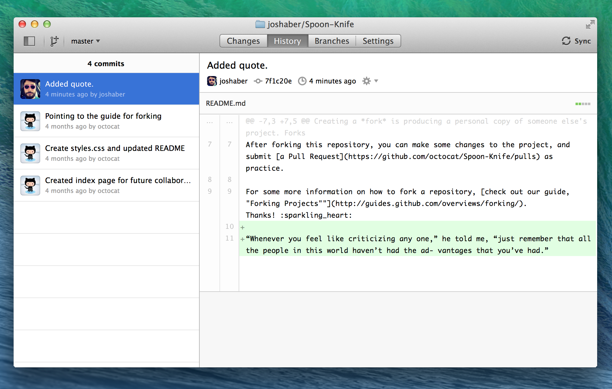

Once you've made a commit to your fork of a project, you can view it alongside all of the previous commits (yours and others') that were made to the project. Just click on the History tab and there it is: your commit is displayed inline at the top of the list.

Each commit in the History view also displays some useful information, including when it was committed, the committer's username and profile photo (if they have one), the commit summary, and a unique ID (a SHA-1 hash) for the commit.
You can scroll the History view up and down to see all of a repository's commits—even the first one ever made! Select a commit from the list to reveal its individual file diffs.
This is also the place to revert specific commits that you've made. You can revert a single commit by clicking on the “More actions” (cog icon) button and selecting “Revert this commit”. Or, if you want to revert all the way back to a specific point in the commit history, you can use “Roll Back to this commit” to travel back in time to that commit.
Tip: Reverting and rolling back will leave the original commit in the repository's history, so you can always revert a revert if necessary and never lose any commits.
Celebrate
Congratulations! So far, you've learned how to fork a project to your own account on GitHub.com, clone it in GitHub for Mac so that you can make your own changes, commit and sync those changes, and view the whole commit history.
That is all well and good if you're working on just one thing at a time and not planning to collaborate with anyone, at any point – but where's the fun in that? Let's take a look at how we can use branches to work more collaboratively and explore new ideas in your work.